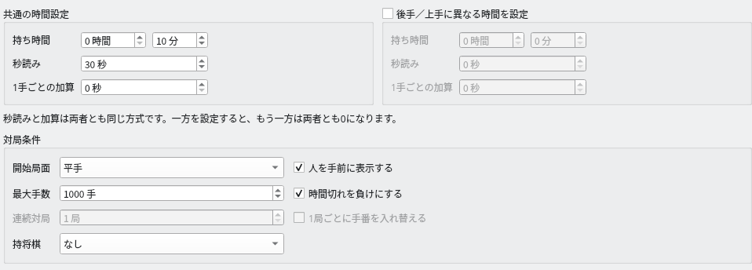
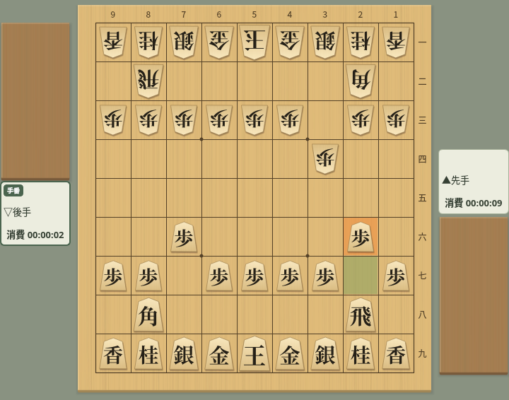
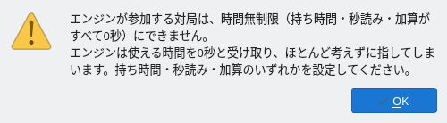
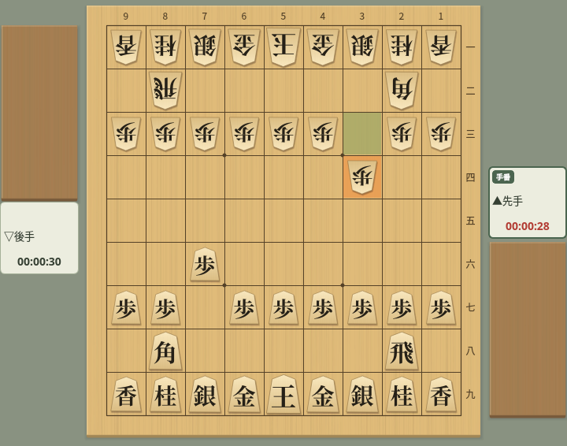

持ち時間と時計
対局ダイアログの時間設定と、対局中の時計の動きを解説します
時間の設定
対局ダイアログで、持ち時間・秒読み・1手ごとの加算を決めます
メニューの「対局」→「対局…」で開く対局ダイアログの中ほどに、時間設定があります。時間はどれも対局者ごとの値です。
- 持ち時間：対局を通して使える基本の時間です。時間と分で指定します。
- 秒読み：持ち時間を使い切った後、1手ごとに使える秒数です。使わなかった分は次の手に持ち越しません。
- 1手ごとの加算：フィッシャー方式の加算です。初手と、以後は指すたびに、この秒数が残り時間に足されます。使わなかった分は残り時間にたまります。
- 後手／上手に異なる時間を設定：オフのときは、左側の値を先後の両方に使います（見出しは「共通の時間設定」）。オンにすると右側で後手／上手の時間を別に設定でき、左側の見出しは「先手／下手の時間設定」に変わります。
- 時間切れを負けにする（「対局条件」の中）：オンなら、使える時間を使い切った側が時間切れ負けになります。オフにすると、時間を使い切っても対局を続けられます。


時間設定：持ち時間10分・秒読み30秒（先後共通）
秒読みと1手ごとの加算は、先後で同じ方式を使います。どちらかの秒読みに値を入れると両者の加算が0に、加算に値を入れると両者の秒読みが0になります。ダイアログの「秒読みと加算は両者とも同じ方式です。一方を設定すると、もう一方は両者とも0になります。」という注記はこのことです。先手だけ秒読み、後手だけ加算という組み合わせはできません。
先後で異なる時間にするときも、別々にできるのは持ち時間・秒読みの長さ・加算の長さで、方式は共通です。
秒読みと加算の動き
設定した時間が、対局中にどう減り、どう足されるかを説明します
手番の間だけ持ち時間が減り、指しても時間は足されません。使い切ると時間切れです。例えば持ち時間5分なら「00:05:00」から始まり、初手を3秒で指すと残りは「00:04:57」になります。
持ち時間が残っている間は、持ち時間から減ります。考えている途中で持ち時間を使い切ると、その手の途中から秒読みに入り、それまでに考えた時間も消費として数えます。
秒読みに入った後は、秒読みの秒数に達する前に指せば、次の手もまた同じ秒数を使えます。使わなかった秒数はたまりません。秒読みの秒数に達した時点で時間切れです（秒読み30秒なら「30秒未満で指す」）。持ち時間を0にすると、初手から1手30秒のような対局になります。
対局の開始時に、初手の分として加算の秒数が持ち時間に足されます。その後は、時間内に指すたびに次の手の分が足されます。相手が指しても、自分の時間は増えません。
| 設定・操作 | 残り時間 |
|---|---|
| 持ち時間0秒・加算10秒で開始 | 10秒 |
| 初手を3秒で指す | 10 − 3 + 10 = 17秒 |
| 次の自分の手を5秒で指す | 17 − 5 + 10 = 22秒 |
| 持ち時間5分・加算10秒で開始 | 5分10秒 |
時間無制限
持ち時間・秒読み・加算をすべて0秒にすると、時間を気にせず指せます
先後の持ち時間・秒読み・1手ごとの加算をすべて0秒にすると、時間無制限の対局になります。「時間切れを負けにする」がオンでも、時間切れ負けにはなりません。
時間無制限にできるのは人間同士の対局だけです。エンジンが参加する対局は、下の「対局を始められない設定」のとおり開始できません。
時間無制限の対局では、時計に残り時間ではなく、それぞれが使った時間の合計を「消費 00:00:09」のように表示します。自分の手番の間は、その手で考えている時間も足して進みます。指した後の値は、棋譜欄の「消費時間」の合計と同じです。


時間無制限：時計はそれぞれの消費時間の合計（先手9秒・後手2秒）
秒未満は切り捨てて表示します。時間が少ないことを示す警告の色も使いません。
対局を始められない設定
時間の設定によっては、「対局開始」を押すと警告が出ます
次の設定で「対局開始」を押すと「時間設定」の警告が出て、対局は始まりません。ダイアログは開いたままなので、時間を設定し直してから、もう一度「対局開始」を押してください。警告が出たときは、設定は保存されません。
| 設定 | 警告の内容と直し方 |
|---|---|
| 片方の対局者だけ、持ち時間・秒読み・加算がすべて0秒（「後手／上手に異なる時間を設定」をオンにしたとき） | 片方の対局者だけを時間無制限にはできません。両方に時間を設定してください。人間同士なら、両方とも0秒にすれば時間無制限で対局できます。 |
| エンジンが参加する対局で、先後とも持ち時間・秒読み・加算がすべて0秒 | エンジンは使える時間を0秒と受け取り、ほとんど考えずに指してしまうため、時間無制限にはできません。持ち時間・秒読み・加算のいずれかを設定してください。 |


エンジンが参加する対局を時間無制限で始めようとしたときの警告
初めて対局ダイアログを開いたときは時間がすべて0秒で、エンジンを登録してあると後手／上手がエンジンになっています。そのまま「対局開始」を押すとこの警告が出るので、持ち時間や秒読みを設定してください。設定した時間は次回も使われます。
時計の表示
盤の横の対局者カードに、時計を「時:分:秒」で表示します
時間制限のある対局では、残り時間を表示します。時計が進むのは手番側だけです。秒未満は切り上げて表示するので、残り7.2秒なら「00:00:08」で、「00:00:00」になった時点が時間切れです。
秒読みの対局では、秒読みに入ると秒読みの残り秒数を表示します。持ち時間0秒の秒読み対局では、それぞれの最初の手番で時計が動き出すまで「00:00:00」と表示されます。
手番側の時計は、時間が少なくなると文字の色が変わります。
- 秒読みがない対局：残り10秒以下で「残り10秒以下の文字」の色、残り5秒以下で「秒読み・残り5秒以下の文字」の色になります。
- 秒読みがある対局：持ち時間の残りが10秒以下で「残り10秒以下の文字」の色、秒読みに入ると「秒読み・残り5秒以下の文字」の色になります。


秒読み中：手番側の時計が警告の色になる
どちらの色も、対局画面の外観の「詳細」タブで変えられます。時間無制限の対局では色は変わりません。
対局を中断すると時計は止まり、「再開」で中断した時点の残り時間から続きます（対局の中断と再開）。